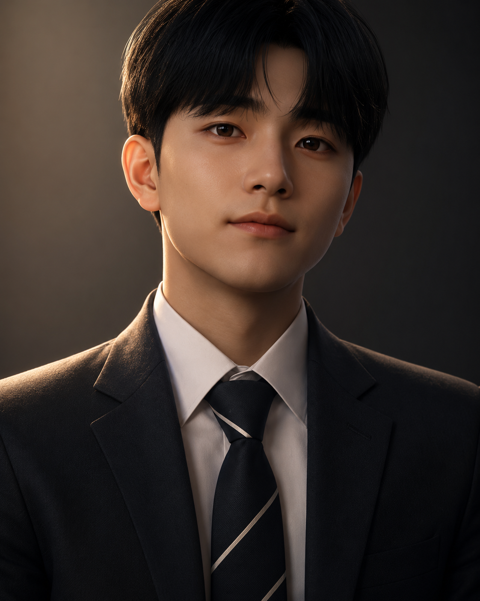

01
Machine Learning
분류·회귀 모델을 학습하고 성능을 비교·평가합니다.

AI와 빅데이터를 공부하며, 데이터에서 의미 있는 문제와 답을 발견하는 예비 데이터 분석가입니다.
Contact meAI인공지능 전공과 빅데이터응용학과를 다전공하며, 데이터를 분석하고 모델로 해석하는 과정을 배워왔습니다. 전처리부터 모델 비교, 결과 검증까지 전체 흐름을 경험했고, 데이터로 더 나은 의사결정을 돕는 분석가를 목표로 합니다.
View project분류·회귀 모델을 학습하고 성능을 비교·평가합니다.
이미지 기반 딥러닝 모델을 구현하고 개선 결과를 검증합니다.
데이터 전처리, 시계열 분석을 통해 인사이트를 도출합니다.
저조도 영상 개선과 객체 탐지 기술을 적용합니다.
정보처리기사 취득 · 데이터분석기사 취득 준비 중
저조도 사진 데이터와 정답 데이터를 바탕으로 영상의 조도를 개선하고, 개선된 이미지에 객체 탐지 모델을 적용해 객체 인식 가능성을 확인한 프로젝트입니다.